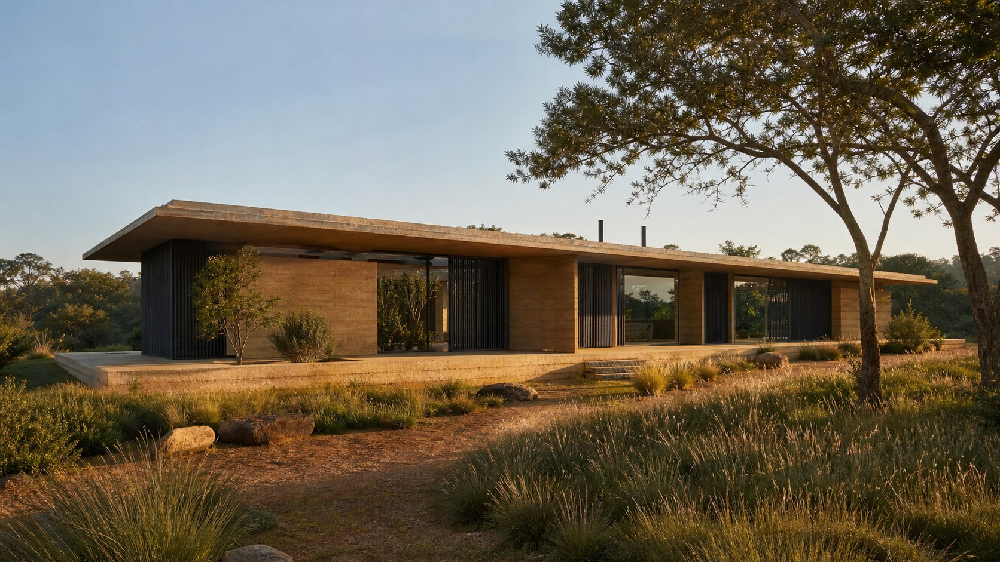
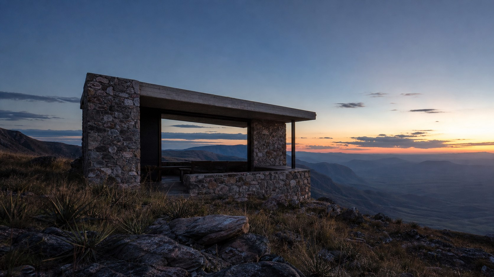
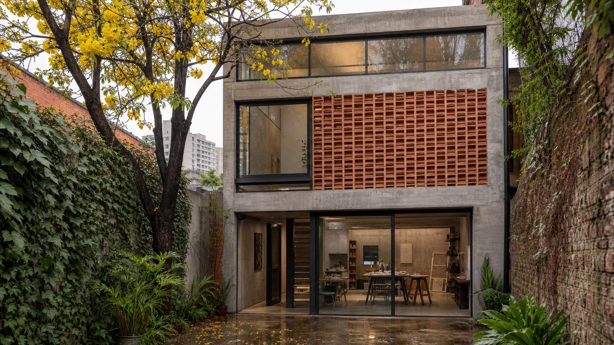
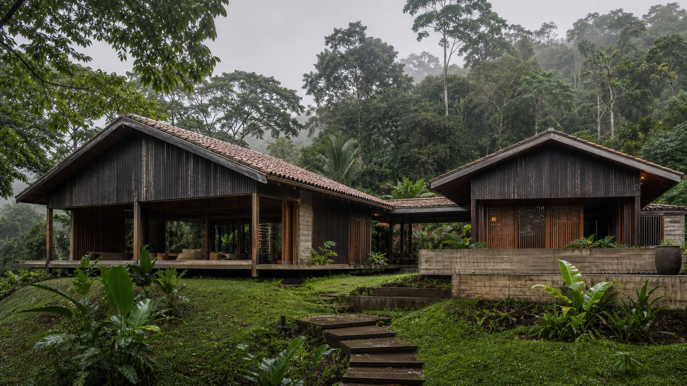

Cota +6,40 mTodo projeto começa com um terreno vazio.
Fundações que sustentam décadas.
Estrutura é intenção.
Uma obra. Dois pontos de vista.
Estúdio de arquitetura · São Paulo
Arquitetura que começa no chão.
Do vazio à estrutura.
Sobre o estúdio
Fundado em 2012 por três arquitetos formados entre São Paulo e Porto, o estúdio trabalha em escala doméstica e cultural — casas, ateliês, pavilhões — sempre com presença semanal no canteiro. Acreditamos que o detalhe se decide na obra, não no escritório.
Nossa prática privilegia materiais de massa aparente: pedra, concreto pigmentado, madeira de reflorestamento. Menos revestimento, mais matéria. O tempo é tratado como material de projeto — tudo o que desenhamos é pensado para envelhecer bem.
Projetos selecionados

Cota +6,40 m
Cota +4,10 m
Cota +7,80 m
Cota +5,25 mProcesso
Programa, orçamento e tempo de vida da casa. Antes de desenhar, entender como se mora.
Leitura do terreno: topografia, sol, ventos, vizinhança. O nível de referência de tudo o que vem depois.
Do estudo preliminar ao executivo, com maquetes físicas em todas as etapas de decisão.
Acompanhamento semanal no canteiro até a entrega — e uma visita um ano depois, para ver como envelheceu.
Contato
contato@cotazero.arq.brRua dos Pinheiros, 1234 — sala 42
Pinheiros, São Paulo — SP
+55 11 3456-7890
Visitas ao ateliê com hora marcada.